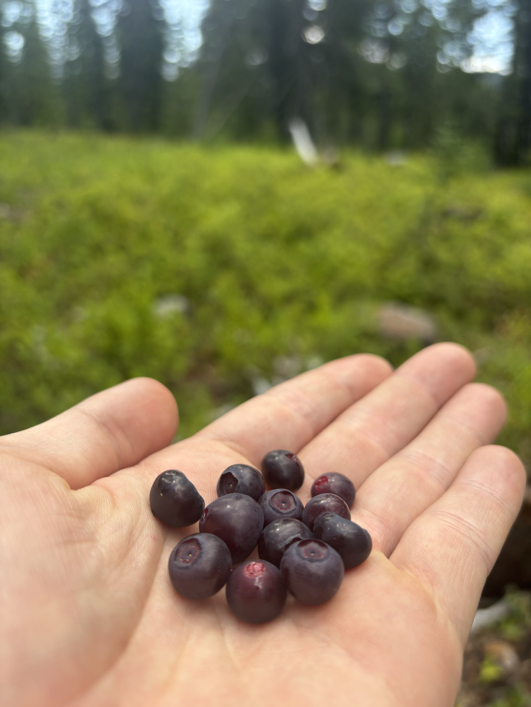

Bois Forte project work
Presented nationally on Tribal carbon development and the Bois Forte project, with a focus on how improved forest management can support debt obligations, forestry capacity, and stewardship aligned revenue generation.
Selected themes and project areas connected to Tribal forestry, carbon finance, and long term stewardship.

Presented nationally on Tribal carbon development and the Bois Forte project, with a focus on how improved forest management can support debt obligations, forestry capacity, and stewardship aligned revenue generation.
Supported project feasibility exploration and forest inventory development while helping frame how Tribal priorities, forestry planning, and technical pathways can align.
Delivered presentations, workshops, and technical translation on carbon markets, IFM, stewardship finance, and risk across community, conference, and partner settings.

Feasibility, inventory, and strategy support for Tribal forest carbon initiatives.
Helping leaders, staff, and communities understand carbon market pathways clearly.
Connecting finance tools with long term land care and forestry objectives.